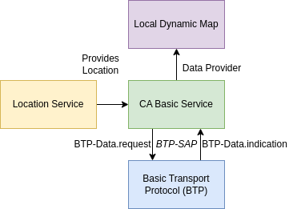

Cooperative Awareness (CA) Basic Service
Introduction
The FlexStack comes with an implementation of the Cooperative Awareness (CA) Basic Service based on the standard ETSI TS 103 900 V2.1.1 (2023-11). This service disseminates and processes the so-called Cooperative Awareness Messages (CAM)s that contain information about the sending vehicle, such as its position, speed, or heading with additional descriptive information like vehicle length or width.
The implementation provided by the FlexStack Community Edition sends those messages whenever the Location Service (see location_service) provides a new location update. Also processes those messages on reception and provides the information to the Location Data Management (LDM) (see ldm).
Diagram
Usage
To instantiate the Cooperative Awareness Basic Service, you need to import the following modules.
from flexstack.facilities.ca_basic_service.ca_basic_service import CooperativeAwarenessBasicService
from flexstack.facilities.ca_basic_service.cam_transmission_management import VehicleData
On one side there is the CooperativeAwarenessBasicService class that literally carries the implementation of that service. On the other side, there is the VehicleData class that contains the information about the sending vehicle. The VehicleData must be passed to the CooperativeAwarenessBasicService constructor with the vehicle’s parameters. To configure the vehicle data class its parameters can be set following the format specified in the ETSI TS 102 894-2 V2.3.1 (2024-08) standard. Here a basic example:
vehicle_data = VehicleData()
station_id = 0 # Station Id of the ITS PDU Header
station_type = 0 # Station Type as specified in ETSI TS 102 894-2 V2.3.1 (2024-08)
drive_direction = "unavailable"
vehicle_length = {
"vehicleLengthValue": 1023, # as specified in ETSI TS 102 894-2 V2.3.1 (2024-08)
"vehicleLengthConfidenceIndication": "unavailable",
}
vehicle_width = 62
Before instantiating the CooperativeAwarenessBasicService, you need to have a Location Data Management (LDM) (see: local_dynamic_map) instance and a BTP Router instance (see: btp_router).
ca_basic_service = CooperativeAwarenessBasicService(
btp_router=btp_router,
vehicle_data=vehicle_data,
ldm = ldm,
)
Once the service has been instantiated it will start automatically processing all the incoming Cooperative Awareness Messages (CAMs), but to send the CAMs you need to add a callback to the Location Service (see: location_service).
location_service.add_callback(ca_basic_service.cam_transmission_management.location_service_callback)
Basic Script sending and receiving CAMs
Here is a basic script that sends and receives CAMs with a basic Ethernet Layer 2 Linux Interface:
# Link Layer Imports
from flexstack.linklayer.raw_link_layer import RawLinkLayer
# GeoNetworking imports
from flexstack.geonet.router import Router as GNRouter
from flexstack.geonet.mib import MIB
from flexstack.geonet.gn_address import GNAddress, M, ST, MID
# BTP Router imports
from flexstack.btp.router import Router as BTPRouter
# Location Service imports
from flexstack.utils.static_location_service import ThreadStaticLocationService
# Local Dynamic Map imports
from flexstack.facilities.local_dynamic_map.factory import ldm_factory
from flexstack.facilities.local_dynamic_map.ldm_classes import (
Location,
SubscribeDataobjectsReq,
SubscribeDataObjectsResp,
RegisterDataConsumerReq,
RegisterDataConsumerResp,
RequestDataObjectsResp,
)
from flexstack.facilities.local_dynamic_map.ldm_constants import CAM
# CA Basic Service imports
from flexstack.facilities.ca_basic_service.ca_basic_service import (
CooperativeAwarenessBasicService,
)
from flexstack.facilities.ca_basic_service.cam_transmission_management import (
VehicleData,
)
POSITION_COORDINATES = [41.386931, 2.112104]
# Instantiate a Location Service
location_service = ThreadStaticLocationService(
period=100, latitude=POSITION_COORDINATES[0], longitude=POSITION_COORDINATES[1]
)
# Instantiate a GN router
mac_address = b"\xaa\xbb\xcc\x11\x21\x31"
mib = MIB()
gn_addr = GNAddress()
gn_addr.set_m(M.GN_MULTICAST)
gn_addr.set_st(ST.CYCLIST)
gn_addr.set_mid(MID(mac_address))
mib.itsGnLocalGnAddr = gn_addr
gn_router = GNRouter(mib=mib, sign_service=None)
location_service.add_callback(gn_router.refresh_ego_position_vector)
# Instantiate a Link Layer
link_layer = RawLinkLayer(
"lo", mac_address, receive_callback=gn_router.gn_data_indicate
)
gn_router.link_layer = link_layer
# Instantiate a BTP router
btp_router = BTPRouter(gn_router)
gn_router.register_indication_callback(btp_router.btp_data_indication)
# Instantiate a Local Dynamic Map (LDM)
ldm_location = Location.initializer()
ldm = ldm_factory(
ldm_location,
ldm_maintenance_type="Reactive",
ldm_service_type="Reactive",
ldm_database_type="Dictionary",
)
location_service.add_callback(ldm_location.location_service_callback)
# Subscribe to LDM
register_data_consumer_reponse: RegisterDataConsumerResp = (
ldm.if_ldm_4.register_data_consumer(
RegisterDataConsumerReq(
application_id=CAM,
access_permisions=[CAM],
area_of_interest=ldm_location,
)
)
)
if register_data_consumer_reponse.result == 2:
exit(1)
def ldm_subscription_callback(data: RequestDataObjectsResp) -> None:
# We are printing any received CAM message.
print(data.data_objects[0]["dataObject"])
subscribe_data_consumer_response: SubscribeDataObjectsResp = (
ldm.if_ldm_4.subscribe_data_consumer(
SubscribeDataobjectsReq(
application_id=CAM,
data_object_type=[CAM],
priority=None,
filter=None,
notify_time=0.5,
multiplicity=None,
order=None,
),
ldm_subscription_callback,
)
)
if subscribe_data_consumer_response.result.result != 0:
raise Exception(
f"Failed to subscribe to data objects: {str(subscribe_data_consumer_response.result)}"
)
# Instantiate a CA Basic Service
vehicle_data = VehicleData()
station_id = 10 # Station Id of the ITS PDU Header
station_type = 5 # Station Type as specified in ETSI TS 102 894-2 V2.3.1 (2024-08)
drive_direction = "forward"
vehicle_length = {
"vehicleLengthValue": 1023, # as specified in ETSI TS 102 894-2 V2.3.1 (2024-08)
"vehicleLengthConfidenceIndication": "unavailable",
}
vehicle_width = 62
ca_basic_service = CooperativeAwarenessBasicService(
btp_router=btp_router,
vehicle_data=vehicle_data,
ldm=ldm,
)
# Start sending CAM messages
location_service.start()
location_service.location_service_thread.join()